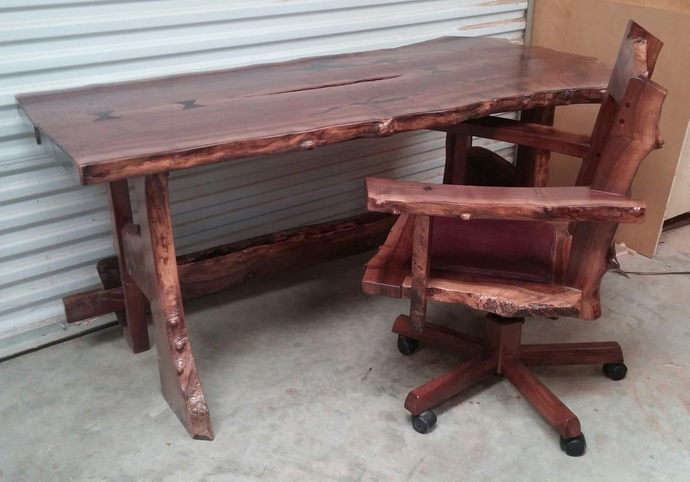

Dennis Schlentz / Owner & master craftsman
A passion for wood.
A respect for the craft.
Hand-crafted furniture and cabinetry. Exotic hardwoods, inlays, and finishes. Over 40 years of turning a customer’s idea into something personal.

We provide our clients with a unique and professional experience from the first design meeting to the final delivery of your new piece of hardwood furniture or hand crafted cabinetry. With over 40 years of quality craftsmanship under our belt, your complete satisfaction is our #1 priority and Dovetail commits to provide continued excellence in workmanship.
We utilize the latest advancements in materials, tooling, equipment, and technology to ensure the precision and quality of our work, while still tipping our hats to good ol' fashioned craftsmanship, by utilizing time tested techniques and a hands-on approach to the design, development, and crafting of your custom furniture request.
Whether your San Diego home needs an entertainment center and fireplace mantel to match your existing exotic woods and finishes, or your office/commercial building needs multiple custom executive suite desks and shelves, Dovetail Furnishings has the experience, expertise, and passion to provide you with the hand crafted furniture and cabinetry you've always dreamed of. We don't just create custom furniture, we hand-craft an experience that will give you joy for generations to come.
We also enjoy collaborating with our clients, from your most difficult cabinetry concept, to designing a piece of custom furniture with a specific motif, look or cultural influence in mind. We will present you with expert options regarding the use of exotic woods and veneers, custom inlays, unique finishes, and striking design, all while catering to your personal style and expectations.
We look forward to turning your custom cabinetry dreams into a hand-crafted reality!
Our San Diego story / Now serving Kentucky
San Diego’s #1 Custom Furniture Craftsman
Dovetail’s original story introduces the shop as San Diego’s premiere exotic and custom wood craftsman for over 40 years, delivering “True Craftsmanship” to San Diego homes and businesses. The portfolio reflects that work. Dovetail Furnishings is now proudly serving the Commonwealth of Kentucky.
Our southern California work includes hand-crafted furniture and cabinetry utilizing the finest exotic hardwoods, inlays, and finishes for homes and businesses throughout southern California.
Dovetail Furnishings provides custom cabinetry and exotic wood furniture for homes and commercial settings. We design, build, finish, and install residential and commercial cabinets, furniture, and many other wood products. High quality exotic woods and unique furniture designs set our work apart.
Your idea. Our craftsmanship.